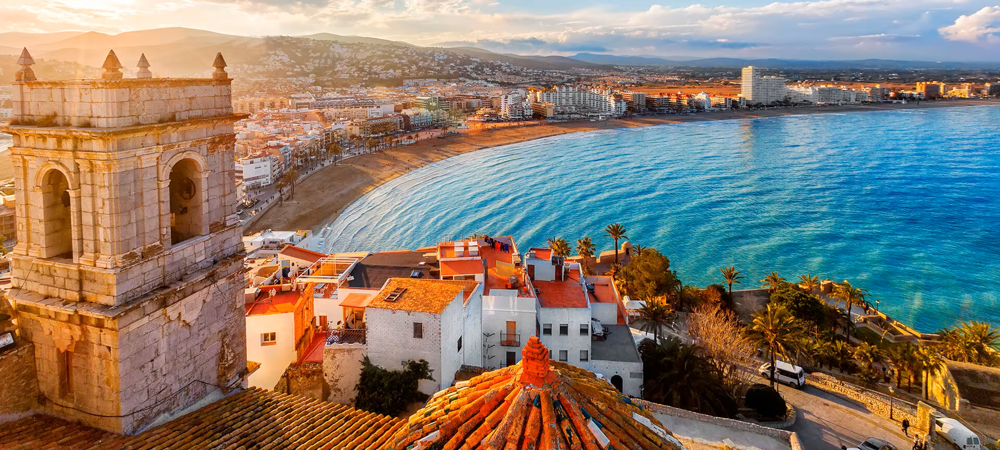
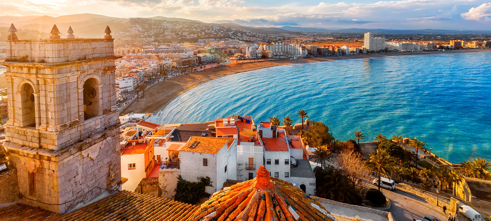

La paella es una receta de cocina con base de arroz,
con origen en la actual Comunidad Valenciana, hoy en día muy popular
en toda España y servida en restaurantes de todo el mundo.
En esta receta, el arroz se cocina junto a otros alimentos en una sartén,
generalmente ancha y con asas.
El nombre de paella hace referencia tanto a la receta como al recipiente
que se utiliza para su elaboración. Se trata de un plato de origen humilde,
descrito por primera vez en España en el área de la Albufera de Valencia.
La paella se ha convertido en uno de los iconos de la gastronomía española.
La primera receta de paella que se conoce con ese nombre data de 1857,
publicada en La cocina moderna, según la escuela francesa y española,
de M. Garciarena y Mariano Muñoz. Bajo el epígrafe Sartén a la Valenciana
(Paella) se describe comenzando con un sofrito en manteca de cerdo de pimientos,
pollo, pato, lomo de cerdo y salchichas, a los que se añade ajo, tomate, perejil,
luego alcachofas y guisantes o judías, el caldo o agua caliente hasta cocinar lo
anterior, trozos de anguilas, caracoles, y finalmente el arroz, mencionando
expresamente no remover desde la mitad de cocción del arroz, y dejar reposar
tras retirar del fuego.
La popularidad de este plato, ha hecho que se haya expandido,
con gran cantidad de variantes adaptadas en los ingredientes,
a las diversas regiones de la cocina española.
El 9 de noviembre de 2021 fue declarada Bien de Interés Cultural.
 
